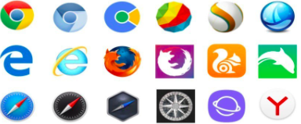

Introduction to the World Wide Web !!
How the web works !!
Web Servers !!
A web server will process incoming network requests over HTTP and several other related protocols. The primary function of a web server is to store, process and deliver web pages to clients. The communication between client and server will take place using HTTP and pages delivered are most frequently HTML documents which can include images, style sheets and scripts in addition to text content.

Web Browsers !!
Web browsers are software applications that are used for accessing information on the WWW. When a user requests a specific website, the web browser will retrieve the necessary content from a web server and then display the web page on the user’s device. However, a web browser is not the same thing as a search engine. Google Search, Bing or DuckDuckGo are search engines aka just a website. These simply store searchable data about other websites. To connect to a website’s server and display its web pages, a user must have a web browser installed such as Google Chrome or Safari.WWW, the Internet and Intranet
How is the WWW different to the Internet ??
WWW {World Wide Web} is a collection of information/web pages found on a network of computers. The internet is a global network of networks that the WWW must use in order to access it’s information. For example, the Internet is a big book-store whereas the Web is a collection of books in that store.What is the intranet ??
An intranet is a private network that is contained within an enterprise and it could consist of many interlinked local area networks. It could also use leased lines in the wide area network. Typically, an intranet will include connections through one or more gateway computers to the outside internet. It’s drastically different to the internet as the internet is something anyone can access at home meaning it’s not a private network. Simply put, an intranet will go between computers in a single building or within a single organisation whereas the internet goes between ALL computers connected to it, even if it’s indirectly.